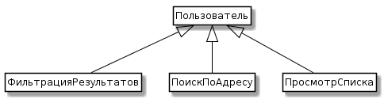

1. ОПРЕДЕЛЕНИЕ СОСТАВА КОМАНДЫ И РАСПРЕДЕЛЕНИЕ РОЛЕЙ
Мобильное приложение, позволяющее подбирать объекты недвижимости по экологическим
и инфраструктурным факторам
2. ВЫБОР USER STORYНазвание прецедента
Мобильное приложение для подбора объектов недвижимости по экологическим и инфраструктурным факторам
3. ОПИСАНИЕ ОСНОВНЫХ ЗАДАЧ И ЗАНЕСЕНИЕ ИХ В КАРТОЧКИ НА КАНБАН ДОСКЕ.
Разработка мобильного приложения
7. Основной поток (main flow)
8. Исключения (exceptions)
Разработчик не выполнил работу в срок
Заказчик отменил требования, расторгнул договор
9. Альтернативы (alternates)
Заказчик изменил требования
